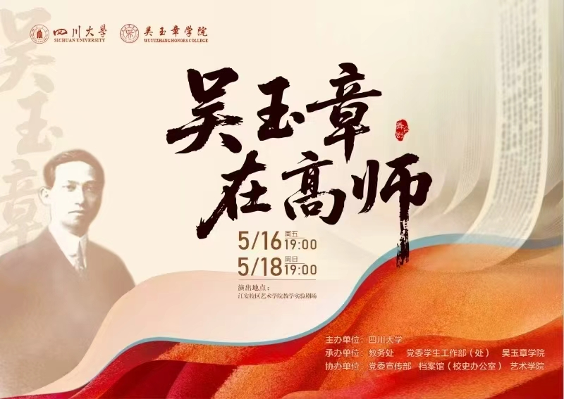

CREATION · 创作背景
创作背景
本剧的创作源于对吴玉章先生教育思想的深入研究与传承。
创作团队历时半年，深入挖掘历史资料，走访相关学者，力求在舞台上真实再现吴玉章先生在高师任教时期的历史场景。
通过这部剧，我们希望让更多年轻人了解吴玉章先生的事迹，传承他“一生革命、一生教育”的精神。

ABOUT · 关于
剧目简介、吴玉章生平与创作背景
《吴玉章在高师》是一部展现吴玉章先生在成都高等师范学校任教期间生平事迹的话剧作品。
该剧由四川大学吴玉章学院出品，以严肃庄重的正剧风格，通过生动的舞台呈现，再现了这位著名教育家、革命家的光辉岁月。
作品聚焦吴玉章先生在高师任教时期的重要经历，展现了他为教育事业付出的心血与贡献，以及那个时代知识分子的精神风貌。

吴玉章出生于四川荣县。
在日本加入中国同盟会，投身民主革命。
参与领导四川保路运动，为辛亥革命作出重要贡献。
在成都高等师范学校任教，致力于教育事业。
在北京逝世，享年 88 岁。
本剧的创作源于对吴玉章先生教育思想的深入研究与传承。
创作团队历时半年，深入挖掘历史资料，走访相关学者，力求在舞台上真实再现吴玉章先生在高师任教时期的历史场景。
通过这部剧，我们希望让更多年轻人了解吴玉章先生的事迹，传承他“一生革命、一生教育”的精神。
四川大学
教务处
党委学生工作部（处）
吴玉章学院
四川大学吴玉章学院